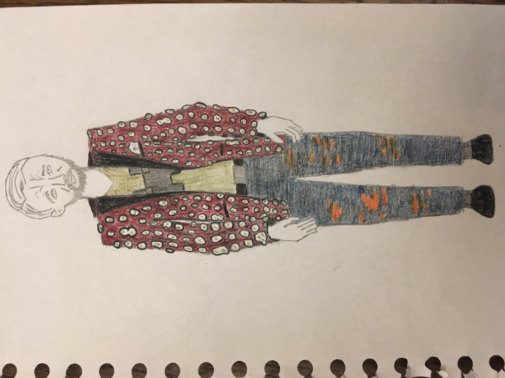
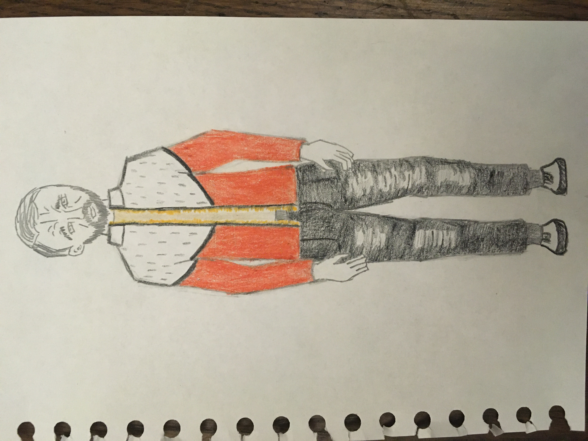
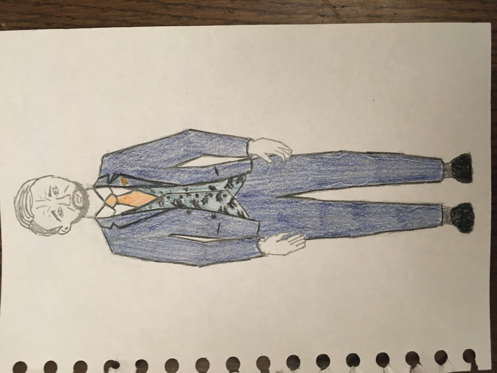
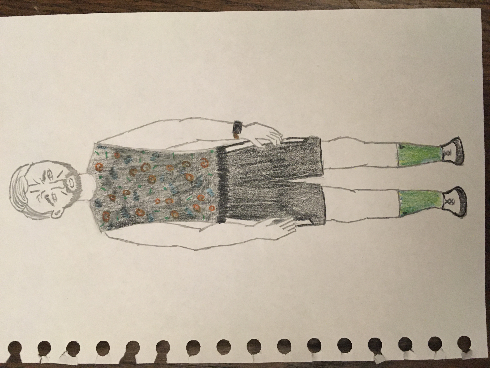
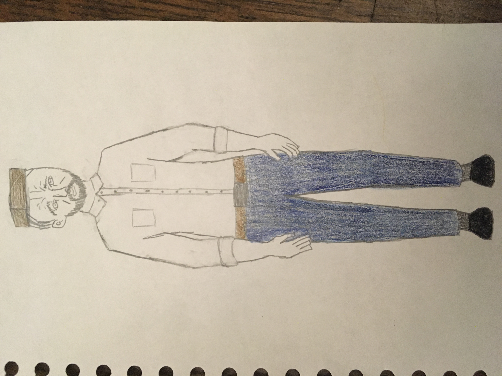
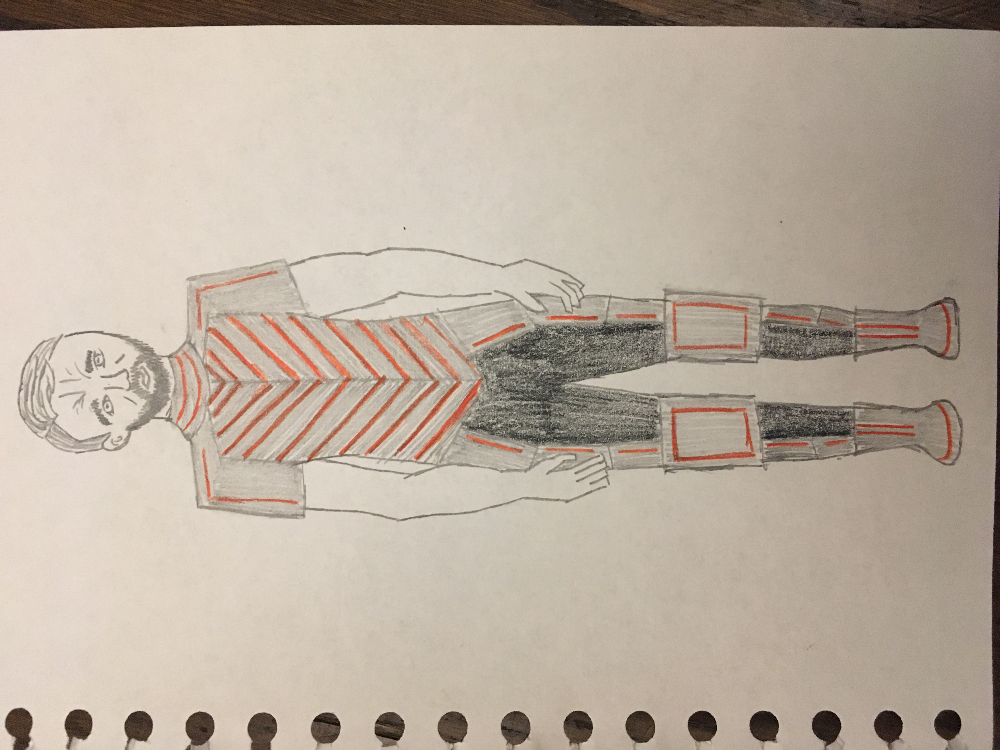
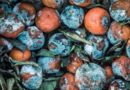
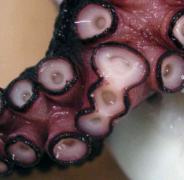
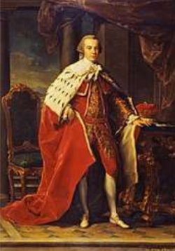
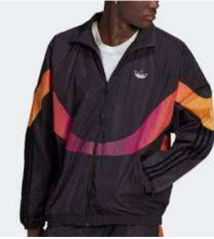

Costume Design (Paper project during COVID19)
Paper Project on Seize the King by Will Powers, 2021.
Concept of the show: Seize the King is about fruitless power and aesthetic struggles disguised as progress. I leaned into the ways (briefly mentioned in 3.1) that this maps onto technological progress and the reality of mortality and resurrection both in a technological and a cycle of human violent/tyranny sense.

I.1 – Edwards’s Funeral

II.1 – Planning Edward’s coronation robes

II.3 – Plotting with Reverend Shaw at St. Paul’s Cross

II.4 – Killing Edward in the Tower

III.1 – Coronation

III.4 – Battle and death at Bosworth
Inspiration Images
I.1 – Edwards’s Funeral

Rotten peached.

Octopus tentacle.
Minecraft reaper.
II.1 – Planning Edward’s coronation robes

British king's robes.

Ad for a workout jacket.